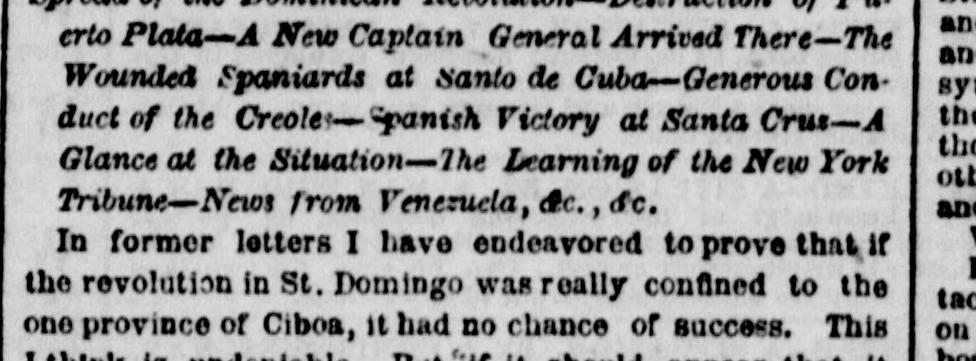

Article in transcriptionArtículo en transcripción
The New York Herald. New York [N.Y.], October 30, 1863. Page 7. Also published as the New York Daily Herald. Published by James Gordon Bennett. A daily newspaper, 1840–1920.The New York Herald. New York [N.Y.], 30 de octubre de 1863. Página 7. También publicado como New York Daily Herald. Publicado por James Gordon Bennett. Periódico diario, 1840–1920. View the originalVer el original

This article is being transcribed again from the original newspaper page. It is not available to read in the meantime; it will return as soon as the new transcription is ready.Este artículo se está transcribiendo de nuevo desde la página original del periódico. Mientras tanto no está disponible para su lectura; volverá en cuanto la nueva transcripción esté lista.
FULL TEXT:TEXTO COMPLETO:
The New York Herald October 30, 186330 de octubre de 1863
Original in English.Original en inglés.
ARRIVAL OF THE EAGLE. HIGHLY IMPORTANT FROM ST. DOMINGO. The Entire Spanish Province in a Blaze. Complete Destruction of Puerto Plata by the Insurgents. Signal Advantages Gained by Them at Azua. THE WHOLE COAST TO BE BLOCKADED. IMPORTANT FROM VENEZUELA. Capture of Puerto Cabello by Falcon. &c., &c., &c.
ARRIVAL OF THE EAGLE.
HIGHLY IMPORTANT FROM ST. DOMINGO.
The Entire Spanish Province in a Blaze.
Complete Destruction of Puerto Plata by the Insurgents.
Signal Advantages Gained by Them at Azua.
THE WHOLE COAST TO BE BLOCKADED.
IMPORTANT FROM VENEZUELA.
Capture of Puerto Cabello by Falcon.
&c., &c., &c.
The steamship Eagle, Captain Adams, from Havana 24th inst., via Delaware Breakwater 29th, where she put in for coal, arrived at this port at an early hour this morning. Her news is important, as will be seen by our correspondence.
The following are the passengers by the Eagle:—
J de Esoards (French Consul), lady and two children; Miss Martine, Mrs B Levy, four children and two servants; Gustavus Pessel and lady, F W Wagner, N A Normand, Manuel Pontes, Thos Gonzales, J del Casal, Marcos Lasa, Lorenzo H de Alva, Manuel H de Alva, Mrs S Mathews, Miss J Jameiquin, Miss M Fesser, Miss M Morney, M Sabonim, lady and two children; Mrs L P de Serrano and daughter, and Dr O'Donnell and son.
Our Havana Correspondence.
HAVANA, Oct. 24, 1863.
Spread of the Dominican Revolution—Destruction of Puerto Plata—A New Captain General Arrived There—The Wounded Spaniards at Santo de Cuba—Generous Conduct of the Creoles—Spanish Victory at Santa Cruz—A Glance at the Situation—The Learning of the New York Tribune—News from Venezuela, &c., &c.
In former letters I have endeavored to prove that if the revolution in St. Domingo was really confined to the one province of Ciboa, it had no chance of success. This I think is undeniable. But if it should appear that it was spreading rapidly, those chances are naturally increased. That such is the case is now unquestionable. Not only has it spread beyond the limits of its cradle, Cibao, where it certainly was at first confined, but, since the beginning of the present month, has assumed such proportions that it may now be said the entire country is in a blaze.
It is extremely difficult to get not simply details but leading facts, nor do the newspapers as yet admit the whole truth. We know, however, enough through such sources to warrant us in believing that the insurrection is spreading, for we have in the first place the proclamation of the Captain General, Don Felipe Rivero of Lemoyne, declaring the blockade of the entire coast, in the preamble to which he states that "several provinces of the Spanish part of the Island of St. Domingo have declared themselves in rebellion, &c." In the next place, we have the very important news that the town of Puerto Plata has been completely destroyed. At first we were told the suburbs had been burned. We now know not a single building remains.
Through private sources, I learn that a day or two after the insurgeints were defeated near the town of Azua, they returned, attacked the garrison unawares and gained signal advantages, even capturing some artillery. It is also asserted, on what I believe to be good authority, that St. Domingo city is ripe for revolt, with the probability that by this time it has risen against the Spanish rule.
Our latest dates from the capital are to the 9th inst., brought to Santiago de Cuba by the war steamer Velasco, but a tithe of the news will never be known. In the attack on Puerto Plata the insurgents had thirty killed, and lost six or seven in prisoners, among them an officer. Spanish loss not stated. These, to the number of twelve or fifteen hundred, are posted in an entrenched camp, fortified with twelve pieces of cannon. Considering that the insurgents succeeded in their design, which was the destruction of the town, their loss has been very insignificant, while they probably inflicted equally as heavy a one on their enemies.
The new Captain General of St. Domingo arrived in Puerto Rico from Spain on the 15th inst., whence he proceeded on the 18th to take charge of his onerous office. This officer is General Don Carlos Vargas, the same who left Havana in the Spanish expedition to Vera Cruz, as second in command to General Gassett, and is one of those most distinguished for their gallantry in the Morocco war. His predecessor, General Rivero, who will not I am sure cry salt tears at his removal, is to return to Madrid to occupy a high post.
The insurgents had sent a flag of truce to the Spaniards at Puerto Plata, asking for medicines and provisions for the sick and wounded who fell into their hands at Santiago, and who were receiving every care and attention at their hands. This fact is additiodal proof that the insurrection is well organized and led, and gives us reason to hope that the war will be conducted humanely.
One hundred and fifty six sick and wounded were carried to Santiago de Cuba on board the Velasco, where they were received with every mark of attention by the people, the members of the volunteer companies vieing with each other in rendering the most friendly services, carrying the unfortunates to the hospitals on their shoulders, and supplying their every want in a manner highly creditable to the generous and charitable character for which the people of Santiago are remarkable. This little incident is worthy of notice, for the volunteers there are mainly composed of natives, many of those most conspicuous in their attentions to the wounded Spaniards, being members of the wealthiest Creole families of that section. I doubt very much if such a fact could be chronicled in any other part of the island. The ladies of Santiago have also shown their kind solicitude for the sufferers by making lint, and bandages, and sending them quantities of every thing they might require. These noble hearted Santiaguenses have even sent delicacies and hospital stores to Puerto Plato, for which General Gandara thanks them in the warmest terms, as well he may.
This general left Santiago for Puerto Plata with the last batch of reinforcements sent from Cuba on board the war steamer Santa Lucia, and on arriving at that place was fired upon by a masked battery which the insurgents had succeeded in planting near the Spanish camp. The Santa Lucia returned the fire, and, as a matter of course, you are prepared to find the Spanish bulletins declare that the rebels were routed ignominiously. In bulletins "our side" invariably wins. That you know from your experience at home. However General Gandara did not land his troops at Puerto Plata, but put to sea again and went to the capital, where they were, by all accounts, just as much needed.
Since writing the above news has been received of a victory gained by Santana, on the 17th inst., at a place called Santa Cruz, in which that individual claims to have made five hundred prisoners and taken a couple of pieces of artillery. I do not know where to locate this Santa Cruz if not in the province of Seibo, some distance to the northeast of the capital, and a still greater distance from Santana's headquarters at Arroyo Vermejo, where he also claims to have whipped the rebels a few days previously. If this conjecture be right, it shows clearly that the insurrection exists in every part of the country, as a glance at the map will disclose. This being the case, let us consider the resources of the Dominicans for carrying on a war with their powerful enemy.
The population of the Spanish part of the island may be estimated at not more than two hundred thousand souls, which might furnish a fighting force of twenty-five to thirty thousand men. It would not be safe, however, to calculate on their furnishing so large a number; for in the war with Hayti for their independence in the year 1844, after the most strenuous exertions, they did not turn out more than half the smaller number. The estimate of fourteen thousand insurgents in Cibao alone, which I mentioned in a former letter, is therefore either very much exaggerated or else armed men from other parts of the country have been flocking there in considerable numbers.
This population of two hundred thousand souls, is scattered over a territory of, I should think, about eighteen thousand square miles, calculating the Spanish part at two-thirds of the entire island; for in the absence of more positive information there is no other way to arrive at an approximation to the truth than by close guessing, and all the information we have in regard to the island is exceedingly meagre. For a guerilla war no country is better adapted, being traversed in every portion by ranges of hills and mountains, some of which rise to the height of six thousand feet. It is besides well watered and generally heavily timbered, to say nothing of the dense undergrowth which
could afford impenetrable concealment to guerrillas. In fact, the insurgents seem to have adopted the plan suggested by Mackenzie in his "Notes on Hayti," by following which, he says, the natives would be invincible, namely, to abandon the coast and destroy all the towns. So far, they have obeyed this suggestion to the letter. Two of their most important towns have been laid in ashes, and we may expect to hear that Azua de Compostela has shared their fate. Yet there is one great difficulty in the way of Dominican success. With a world of mineral and other wealth at their feet, the Dominicans are among the poorest people on the globe, a fact which says nothing in their favor. Under these circumstances, and in this material, unromantic age, the prospects of their being able to negotiate a loan in Paris, London, or even New York, are absurdly small. To carry on war they must have powder, lead and iron; but if they have no money to buy these articles with, how are they to get them? This is a great obstacle. The blockade of their coast is nothing. Blockades have been run before now. But the want of money, the sinews of war, overwhelms all calculation, or rather reduces the question to so plain a point as to remove all doubt.
Spain will be obliged to send an army of fifty thousand men and spend millions of dollars; but she has the men, and if she have not the money, can borrow it from her friends.
The only question for Spain really is, is it worth her while to conquer St. Domingo? Judging from the history of the past, I am convinced it would be a useless conquest, unless a large European immigration could be coaxed to settle there. Never while the sun shines will the Dominicans be induced to develop the resources of their country by voluntary labor. Their own leaders found it necessary to establish a compulsory system of labor, which differed very little indeed from slavery. President Boyer tried the voluntary system and abrogated the laws of Christophe and Petion; but he soon found it utterly useless, and was obliged to re-enact the severe laws of his predecessors. This is an indisputable fact, and the whole modern history of St. Domingo lies snugly in it. The labor laws of Christopher cost him his life. The opposite system, with which Boyer inaugurated his rule, induced the lazy, indolent, labor hating Dominicans to submit themselves to him, and both sections of the island became united in one common republic in the year 1821. The return of the general government to the forced system induced the Dominicans to rebel, or secede, whichever you choose, and they gained their point. Since that time the country has not improved, one may very well imagine, but has, if anything, deteriorated, much to the disgust of the few educated, intelligent Dominicans who went about the world for years begging for some one to take charge of their country. Spain was disposed to undertake the business, but insists point blank that the Dominicans must work. The Dominicans will fight first. Work they will not. Let philosophers, like those of the New York Tribune, whose article on the bloody struggle in Dominica (!) amused and instructed me very much, for I did not know there was any struggle going on in that island. Let those philosophers or any others rant over St. Domingo as much as they know how, but the real kernel of Dominican hostility to the Spaniards is their constitutional dislike to earn their bread by the sweat of their brow.
At the same time I do not think the Spaniards have any right to force them to work, or to govern them in any way, shape or form. They have no business whatever in St. Domingo. The people of that country have a "natural and inalienable right" to go to the devil their own road, and no one has any right to interfere. Yet while I do not sympathize with the Spaniards, because I think them in the wrong, I certainly feel no sympathy in my bosom for the Dominicans, whose noblest motive in this, as in all other wars, is the unrestrained indulgence of their sloth and licentiousness.
We have had no news from Mexico lately.
From Venezuela we learn that the troops of Falcon attacked Puerto Cabello successfully and occupied the town on the 5th inst., the discomfited garrison taking refuge on board their fleet and making off to Ciudad Bolivar. This is highly important. We should now very much like to know if the escaped garrison will be the nucleus for another army opposed to Falcon, and if the civil war is to break out as bad as ever.
The scarcity of paper on the United States has caused a slight improvement in exchange, when by all the rules of commerce it ought to be further depressed. New York is quoted at 35 to 36 dis. It had been 38. The Corsica leaves this evening.